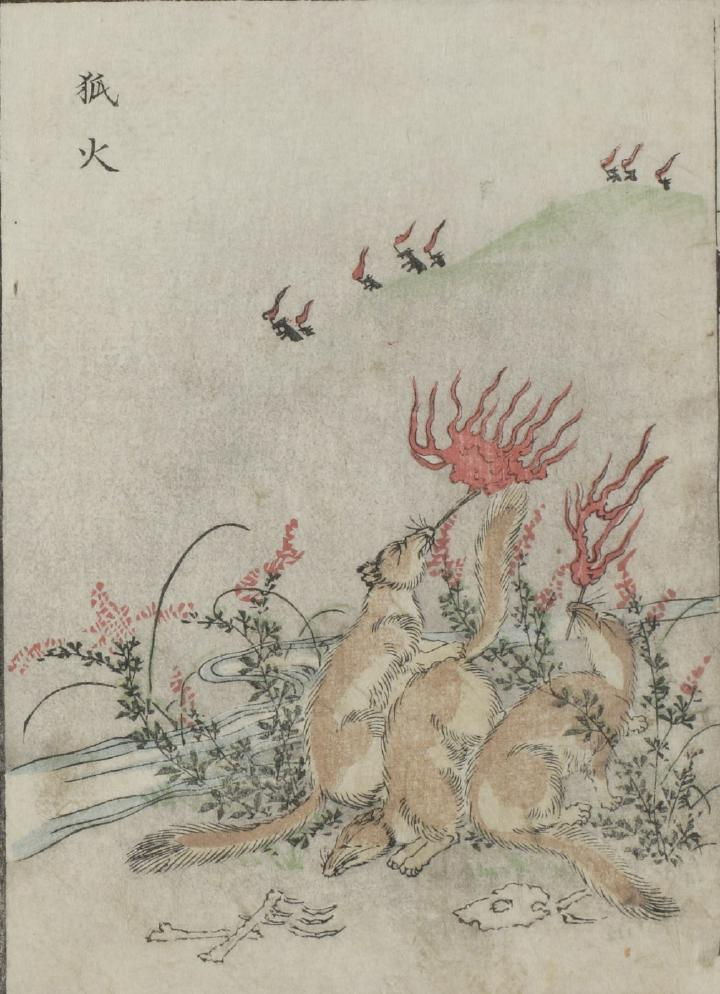

狐；キツネ，怪火；カイカ

手前に3匹の狐が描かれている。中央の狐は尻尾で火をおこしているかのように見える。両脇の狐は、口に松明をくわえている。画面後方に描かれている山の裾には、火を口にくわえた狐と思われる幾つもの影が描かれている。
出典：親書誌：U426_nichibunken_0051：怪物画本；カイブツエホン／日付：2006／資源識別子：U426_nichibunken_0051_0026_0000
Copyright (c)2010- International Research Center for Japanese Studies, Kyoto, Japan. All rights reserved.